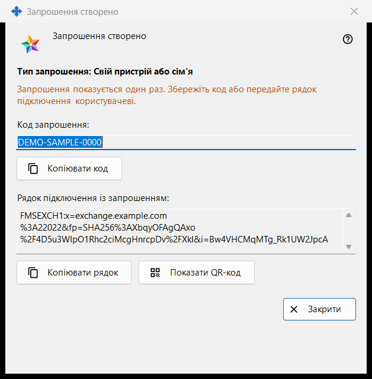
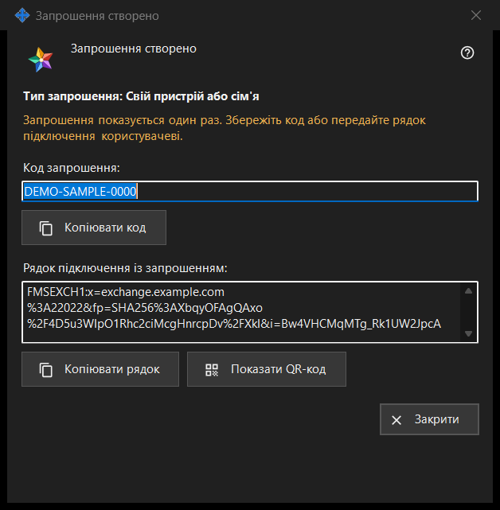

Запрошення створено
Призначення
Вікно показує нове запрошення один раз - одразу після «Створити» у вікні «Створити запрошення». У ньому одноразовий код і рядок підключення, що вже містить код, якщо програма сервера обміну змогла його скласти.


Порядок дій
- Перевірте рядок «Тип запрошення: ..».
- Натисніть «Копіювати код», або «Копіювати рядок» для рядка із запрошенням, або «Показати QR-код».
- Передайте результат людині надійним каналом.
- Натисніть «Закрити». Той самий код повторно не показується.
Елементи вікна
Тип і попередження
Напівжирний рядок «Тип запрошення: Свій пристрій або сім'я» називає вибраний тип. Рядок попереджувального кольору повідомляє: «Запрошення показується один раз. Збережіть код або передайте рядок підключення користувачеві.» Коли вікно закривається, код і рядок стираються з нього. Якщо одне з них втрачено, відкличте запрошення в списку й створіть нове.
Код запрошення
У полі «Код запрошення:» (лише читання) показано код. «Копіювати код» копіює його як секрет - повз історію буфера обміну Windows (Win+V) і хмарний буфер; рядок нижче повідомляє «Код запрошення скопійовано в буфер обміну.» або «Не вдалося скопіювати код у буфер обміну.»
Рядок підключення із запрошенням
«Рядок підключення із запрошенням:» є лише тоді, коли рядок вдалося скласти. Він називає сервер і несе код, тому поводьтеся з ним як з кодом: «Копіювати рядок» теж копіює його як секрет. Пароля вашого облікового запису в ньому немає.
QR-код
«Показати QR-код» відкриває картинку з рядком запрошення. Будь-хто, хто її побачить, зможе скористатися запрошенням, тому показуйте її лише тому, кому вона призначена. Якщо картинку скласти не вдалося, рядок повідомляє «QR-код зараз недоступний.»
Що робить інша людина
У вікні облікового запису обміну («Увійти..») людина вставляє рядок кнопкою «Вставити» або відкриває збережений файл. Рядок із запрошенням перемикає вікно на реєстрацію: вона вибирає логін, двічі вводить пароль і натискає «Створити обліковий запис». Неправильне чи вже використане запрошення та зайнятий логін відхиляються з повідомленням.
Закрити
«Закрити» завершує роботу вікна і стирає з нього код та рядок. Більше тут нічого не зберігається.
Налаштування менеджера · Налаштування спільного доступу SFTP · Налаштування сервера обміну